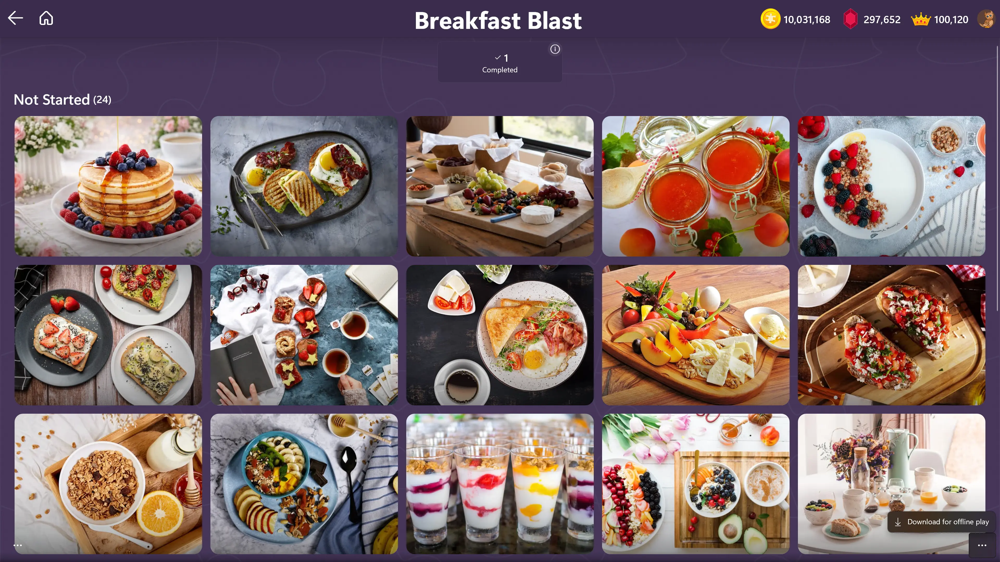
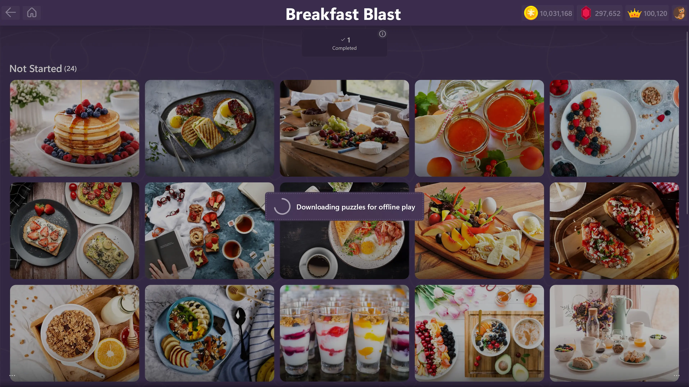
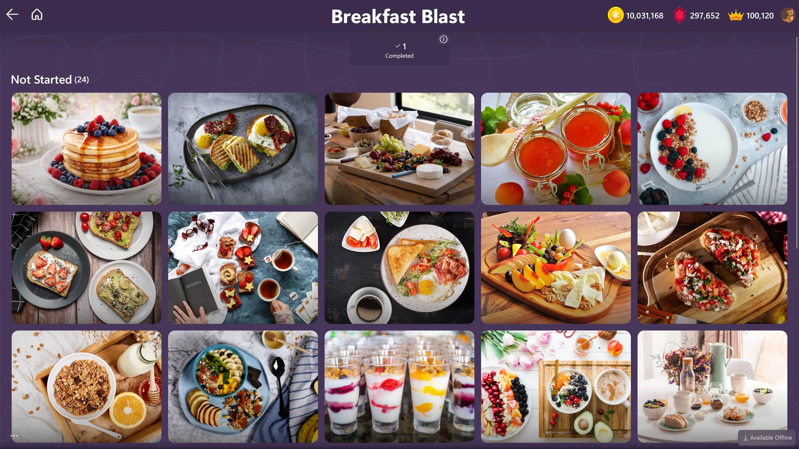

Author: Mihai, last modified: 09/06/2026
Jigsaw Puzzle Frenzy is a fun and relaxing video game that lets you enjoy solving beautiful jigsaw puzzles on your Windows device. You can choose from hundreds of stunning images, customize your puzzles, and challenge yourself with different levels of difficulty.
One of the most exciting features of Jigsaw Puzzle Frenzy is the ability to play jigsaw puzzles offline. However, this feature is only available for premium subscribers who have access to the full version of the game.
If you are not a premium subscriber yet, you will see a dialog asking you to upgrade to premium when attempting to download the puzzles for offline play. This means that you cannot play offline puzzles unless you upgrade to the premium subscription.
But don’t worry, you can still try out this feature for free by starting a 7-day trial of the premium subscription. To do this, simply tap on the ... button in the bottom right corner of any puzzle pack and follow the instructions on the screen. You will not be charged until the trial period ends. You can cancel your subscription at any time before the trial ends if you do not wish to continue.
In order to download a puzzle pack for offline play, follow these instructions
|
 |
|
 |
|
 |
The premium subscription costs only $14.99 per month or $12.49 per month when purchasing a yearly plan. That’s a great deal considering that you will get unlimited access to all the puzzles and features in the game. Plus, you will save more than 15% when you choose the yearly plan over the monthly plan.
We hope that you will have a great time playing jigsaw puzzles offline. If you have any questions or feedback, please feel free to contact us.
Thank you for playing Jigsaw Puzzle Frenzy!